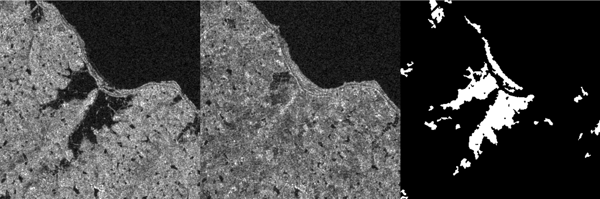
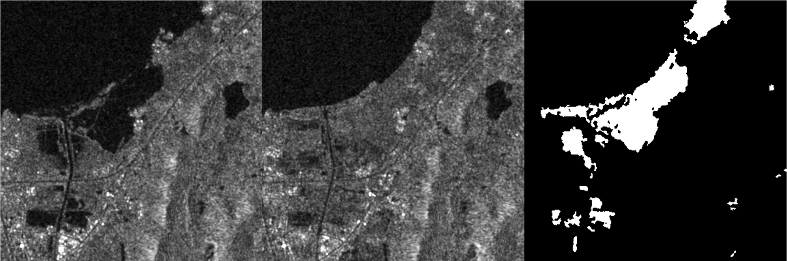

SAR图像变化检测技术是一种利用合成孔径雷达(SAR)图像来检测和分析目标或场景变化的方法。该技术主要通过比较不同时间或不同条件的SAR图像，以识别和评估变化。
SAR图像变化检测
技术介绍
SAR图像变化检测方法
SAR图像变化检测的方法包括基于像素的方法、基于区域的方法和混合方法。基于像素的方法通过比较相邻像素之间的强度或灰度值来检测变化，基于区域的方法则通过比较不同区域之间的强度或灰度值来检测变化。混合方法结合了基于像素和基于区域的方法，以提高变化的检测精度和可靠性。
SAR检测结果
SAR图像变化检测的结果可能受到多种因素的影响，包括天气条件、目标姿态和材料性质等。因此，在评估变化检测结果时，需要综合考虑多种因素并进行实地验证，以确保结果的准确性和可靠性。
检测结果预览：
 原理分析
SAR图像变化检测原理
SAR图像变化检测的原理基于合成孔径雷达(SAR)成像原理。SAR在飞行过程中以一定的频率和角度向地面发射脉冲并接收回波，从而确定地面信息。其成像原理依赖于电波的发射、反射和接收以及信号处理技术。核心是利用空间的合成孔径原理，在相应的空间位置通过多次焦点反射，最终形成一个具备分辨率的雷达照片。
SAR成像原理
SAR的成像原理大致可以概括如下：SAR雷达成像技术是在移动过程中，让探测器（探测器可以是航空器、舰船、星等）绕着一条拐弯般的运动轨迹布置，而同时发射和接收微波脉冲来模拟一个非常大的成像孔径。由此可以获得非常高的分辨率，比一般的雷达技术高出若干倍。同时，SAR的发射和接收技术能够模拟一条拐弯般的运动轨迹，构成一个极长的合成孔径，从而获得较高的分辨率和轮廓清晰度。
SAR与其它大多数雷达一样，合成孔径雷达通过发射电磁脉冲和接收目标的时间差测定距离，其分辨率与脉冲宽度或脉冲持续时间有关，脉宽越窄分辨率越高。合成孔径雷达通常装在飞机或卫星上，分为机载和星载两种。
SAR图像变化检测主要是通过比较不同时间或不同条件的SAR图像之间的差异来识别和评估变化。这种差异可以通过像素强度或灰度值的变化来体现。例如，如果一个区域在SAR图像中显示为黑色，但在另一个图像中显示为白色，那么这个区域就可能发生了变化。这种变化可以是由自然因素（如风、雨、季节变化等）引起的，也可以是由人类活动（如建设、开采、植被管理等）引起的。